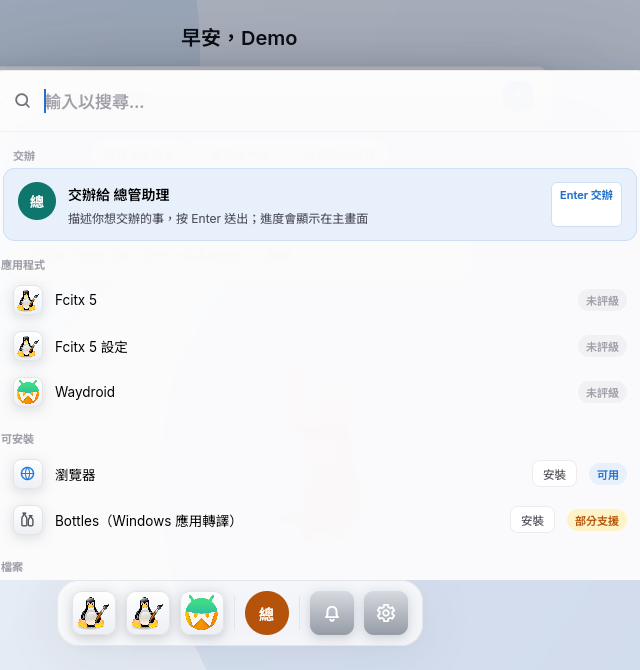
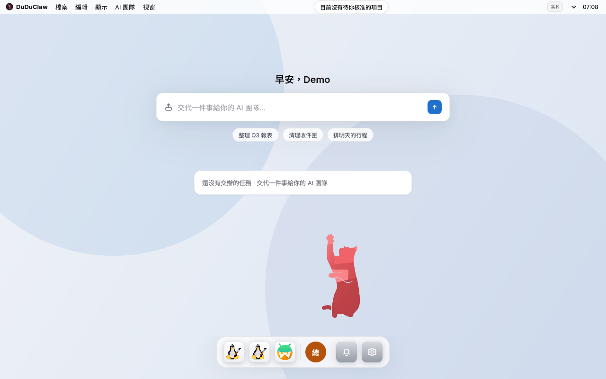
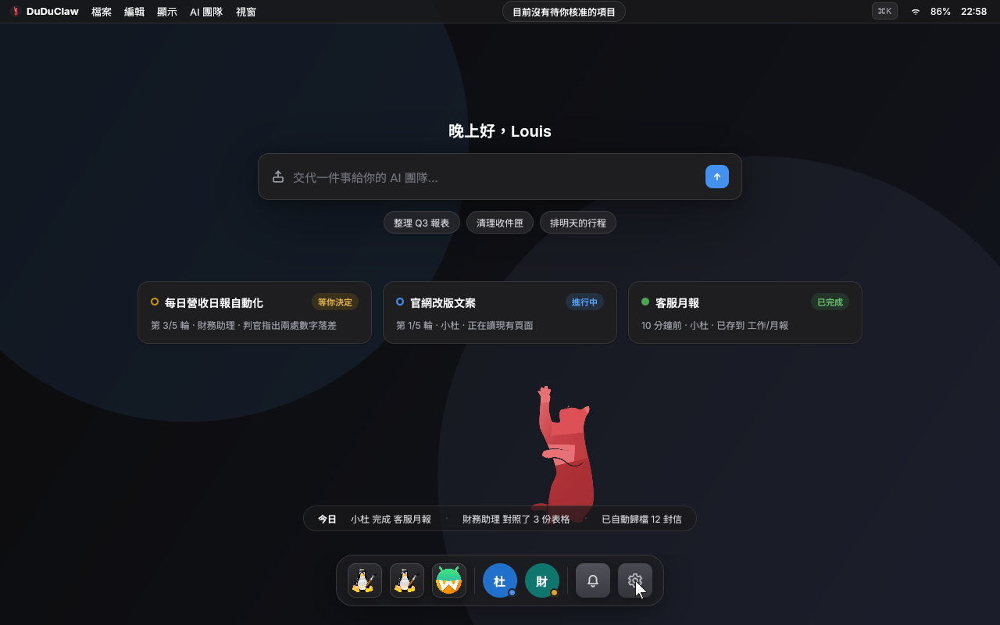
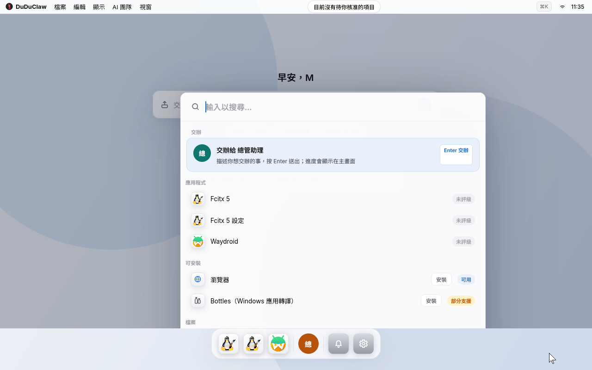
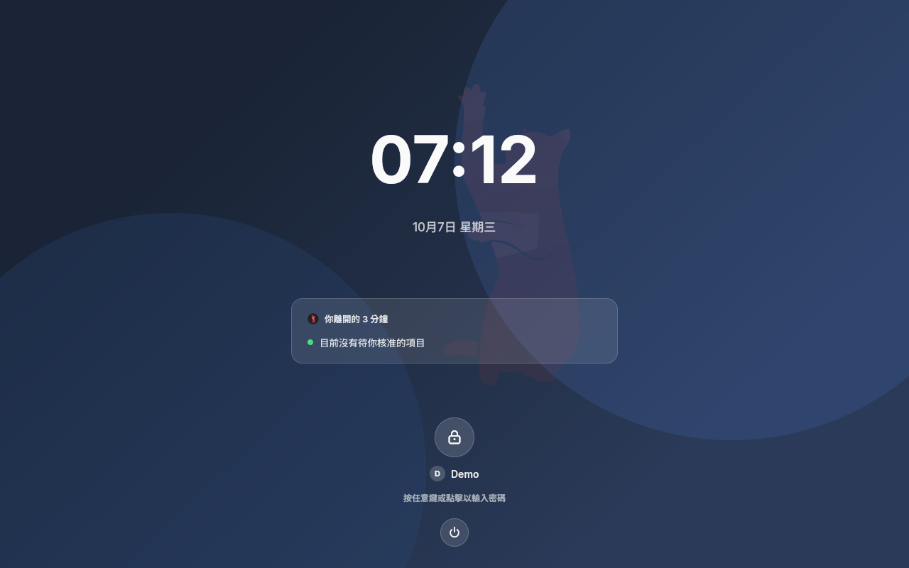
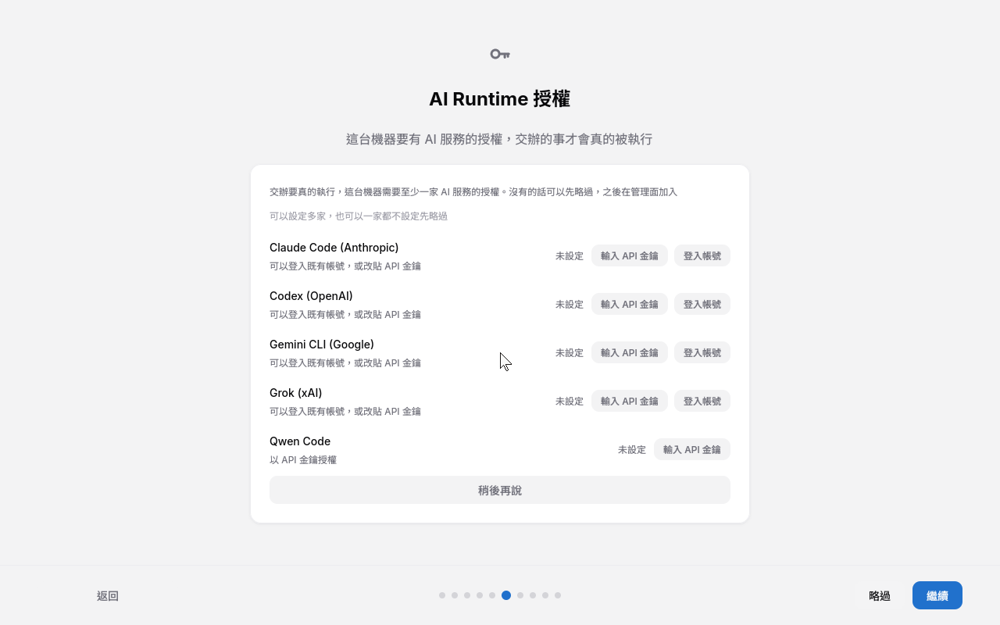
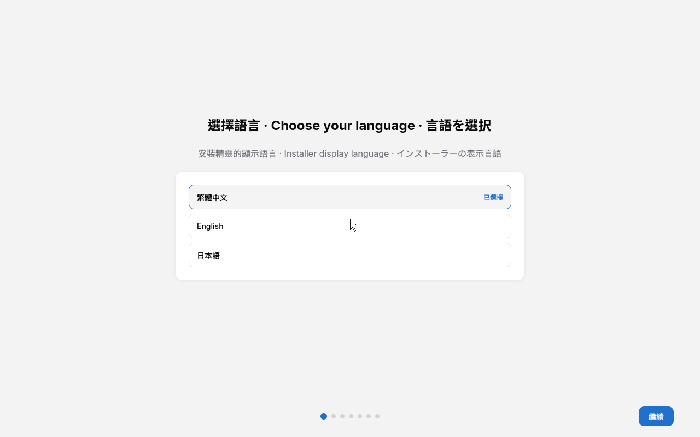

說清楚要做什麼
按 Super+K 或使用首頁輸入框，描述工作與完成條件，把任務交給已設定的 AI 員工。

以下六張都是 v0.2.0 發布映像在 QEMU 上的截圖（v0.3.0 與 v0.4.0 還沒重拍），2026 年 10 月 7 日拍攝，映像與 Release 上的檔案核對過 SHA-256 與簽章。安裝精靈那張來自桌面版安裝器 ISO，其餘五張來自整碟映像的首次開機。帳號名稱「Demo」是示範用的，也沒有設定任何 AI 服務的授權，所以首頁還沒有任務。真機畫面目前還沒有。
v0.2.0 截圖 · v0.4.0 尚未重拍

開機第一眼就是交辦列。桌機顯示完整桌面，手機顯示輸入框、任務列與 Dock 的細部裁切。剛裝好的機器還沒有任務，任務列只有一行提示。

同一個首頁的深色主題，在首次設定精靈的「選擇外觀」那一步選定。有交辦之後，任務會以卡片列在輸入框下方；這張截圖的機器沒有設定 AI 服務，所以還沒有任務。手機顯示交辦列與 Dock 的細部裁切。

按 Super+K 叫出來，第一個結果永遠是交辦給 AI 員工，往下才是應用程式、可安裝項目與檔案。

鎖著的時候也看得到值班摘要：你離開多久、有沒有待你核准的項目。

首次設定精靈的其中一步。登入既有帳號或貼上 API 金鑰都可以，一家都不設也能先略過，之後在管理後台補。

安裝器 ISO 開機後的第一步。安裝精靈提供繁體中文、English、日本語三種顯示語言。
先設定 AI 服務與員工，再從桌面交辦。啟用共駕後，GUI 工作預設在影子工作區進行；你可以旁觀，也能接手或急停。以下展示操作方式，不代表圖中的任務已由模型執行。
按 Super+K 或使用首頁輸入框，描述工作與完成條件，把任務交給已設定的 AI 員工。
回首頁看任務進度；需要你決定的操作會顯示核准提示，從管理後台處理。
用子母畫面旁觀 GUI 工作。你操作鍵盤滑鼠時 AI 輸入凍結；Super+Enter 交還，Super+Esc 急停。
你的螢幕
duduclaw-comp
你操作鍵盤滑鼠時，AI 的輸入凍結
影子輸出 duduclaw-shadow-0
GUI 任務預設落在無頭的第二輸出。聊天回覆、目標迴圈、排程工作與型別化工具更是連桌面都不碰。
想盯著就把預覽拉出來；把它拉到前台就進入共駕，螢幕會出現琥珀色邊框，接手時轉成暗紅色。
實體鍵盤滑鼠的任何事件都先讓 agent 的 seat 凍結，指令直接丟棄不排隊。Super+Enter 交還，Super+Esc 急停，兩者都由 compositor 持有。
影子工作區與共駕已編譯進 v0.4.0，預設關閉，每個 agent 各自開啟。凍結與接手曾在早期開發映像驗證，並非這版 x86-64 發布映像；真實 DRM 硬體與雙螢幕尚未驗證。完整驗證範圍。
v0.4.0 桌面版內嵌 DuDuClaw 平台 1.73.4，基座為 Yocto Project 6.0 與 Linux 6.18。以下是映像內容；功能的驗證程度見狀態卡與文件。
按 Super+K 打開交辦列，首頁查看任務，選單列與通知中心顯示待核准項目。管理後台也能從區網操作。
影子工作區、子母畫面、接手與急停整合進視窗系統。共駕預設關閉，需要為每個 AI 員工各自開啟；尚未在真機驗證。
桌面版包含 Claude Code、Codex 等十套 AI CLI。以自己的廠商帳號或 API 金鑰授權，憑證存在 /data/duduclaw。
內建 llama.cpp 的推理服務；模型需另行下載到本機。準備好權重後可離線推理，雲端 AI 服務與網路任務仍需要連線。
Chromium 與 LibreOffice 可由內附的離線倉庫安裝，提供 fcitx5 注音。其他軟體走 Flathub；Windows／Android 相容層的驗證仍有限。
A/B 更新寫入另一個系統槽；桌面版採唯讀 root，資料另存於 /data。先前的映像實測過套用更新與手動回滾，v0.4.0 的 A/B 升級路徑還沒驗證，自動失敗回滾也尚未做故障注入驗證。
兩種都提供圖形安裝精靈的 ISO；桌面版另外提供可直接寫入整碟的映像。都屬於 pre-GA，請先準備可重裝的測試環境。
想試用交辦桌面與 AI 工具鏈
gateway 值班機，接不接螢幕都行
管理後台由 gateway 提供，接不接螢幕都能從區網的瀏覽器打開 http://<這台機器的 IP>:18789。
以下是建置目標與規劃規格，不是真機相容認證。只提供 x86-64（x86-64-v3）映像；目前尚無真機開機數據。
Intel Haswell（2013 年）以後、Intel N100 / N200 / N305、AMD Excavator（2015 年）以後與 Zen 全系都符合。
不支援 arm64
Apple Silicon、樹莓派與 ARM 迷你主機都不能用。
純 legacy BIOS 的機器不在支援範圍。v0.4.0 的開機鏈未啟用 Secure Boot 簽章，開機前要在韌體裡關閉 Secure Boot。
A/B 雙槽佈局會同時放兩份系統，機械硬碟的隨機讀寫撐不住日常使用。
| 配置 | CPU | 記憶體 | 硬碟 |
|---|---|---|---|
| 最低 | 支援 AVX2 的 x86-64 | 4 GB | 64 GB SSD |
| 建議 | Intel N100 / N305 或 Ryzen 5 | 8 GB | 128 GB SSD |
| 舒適（遊戲、本機 LLM） | Ryzen 7 8845HS | 16 GB 以上 | 256 GB SSD 以上 |
不需要獨立顯示卡；QEMU 上的桌面走 llvmpipe 軟體渲染，真機的 GPU 加速還沒驗證。以上規格都還沒有真機開機數據支撐。
先選映像、驗簽，再依指南寫入 USB 或測試硬碟。首次設定提供圖形精靈；v0.4.0 安裝器尚未完成整段安裝驗證，請以指南與目前測試範圍為準。
選對 QEMU／真機目標，用 minisign 與 SHA-256 驗證來源，再依下載頁寫入指南操作；寫入前備份，確認目標硬碟。
語言、帳號、主題、Wi-Fi 在圖形精靈裡一路點完，不必開終端機。
在 AI Runtime 授權頁或管理後台登入既有帳號、貼上 API 金鑰。憑證存在 /data/duduclaw，系統更新不會清掉。
按 Super+K 叫出交辦列，描述你要的事，AI 員工排隊接手，進度回到首頁看。
OS 的設定、AI CLI 憑證與模型存於本機 /data/duduclaw。使用雲端模型時，交辦內容與執行所需資料仍可能傳給供應商，依你選擇的工具與服務政策處理。
/data。
桌面版有唯讀 root，基礎版沒有；兩版都有預設拒絕的防火牆，SSH 預設關閉。v0.4.0 起 gateway 以一般帳號 duduclaw 執行，AI 員工跟它共用這個帳號。共駕預設關閉，系統提供接手、急停與核准機制；這些不等於完整隔離或供應商的資料保護保證。
所有 v0.4.0 資產都用這一把簽，v0.1.0 到 v0.3.0 也是同一把。公鑰固定寫在這裡，下載後用它驗。
RWQyI00ugZ/+WVisQ2ZnKeTqFs8Ze8h2X11FO9Z8le0YubFMXYTwQD7nDuDuClaw 是 AI 員工平台，可部署在既有系統；DuDuClaw OS 是內嵌平台的 Linux 映像，加上交辦桌面、視窗系統與 A/B 更新鏈。OS 版號獨立，v0.4.0 內嵌平台 1.73.4，並非平台最新版本的全部功能。
目前建議用可重裝的測試環境試用。v0.4.0 是 pre-GA，驗證以 QEMU 為主，真機尚未開機；安裝器整段流程、真機 GPU 與雙螢幕仍未驗證。請先看目前狀態。
目標為支援 AVX2 的 x86-64 CPU、UEFI 與 SSD；規劃最低為 4 GB RAM、64 GB SSD，但尚無真機數據支持。arm64／Apple Silicon 不在支援範圍。官方映像開機需關閉 Secure Boot，詳見硬體條件。
雲端 CLI 需要你自己的供應商帳號或 API 金鑰，費用與使用條款依供應商而定，不包含在 OS 下載中。桌面版可另行下載本機模型供離線推理；模型下載、雲端服務與網路任務仍需要連線，基礎版不含 AI CLI 與本機推理服務。
OS 設定、憑證與本機模型保存在本機資料分割區；但交辦給雲端模型時，提示、檔案內容與工具結果等執行所需資料可能傳給該供應商。資料去向由你配置的服務與工具決定；不能將本機部署理解成所有資料都不會出機。
OS 開源程式碼採 Apache-2.0，內附元件仍各有授權。DuDuClaw 的企業導入、培訓與支援由總經銷 未來企業股份有限公司提供。OS 目前仍為 pre-GA，企業平台服務不代表 OS 已通過生產環境驗收。
OS 本身與平台功能的說明都在文件站，繁體中文、English、日本語三種語言。